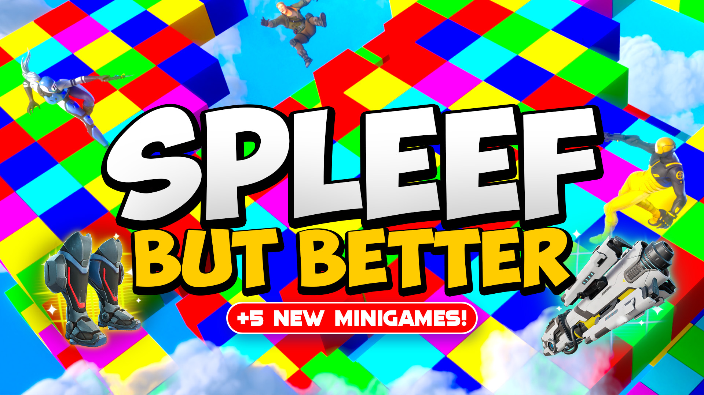

Spleef But Better
A solo UEFN take on classic Spleef, built entirely inside Fortnite's tile-destruction sandbox.

Overview
Spleef But Better is an island created in UEFN and published on Fortnite servers. Playable with island code 8232-8944-3888, it features a randomized loadout system with custom UI animations to announce what players receive. Additionally, 11 minigames have been added via a player vote, with more in the works.
If you don't know what Spleef is, it's a game where players break the floor beneath their opponents, aiming to drop them out of bounds and eliminate them. The origins of the game go back to Minecraft servers, but I've reimagined the classic minigame into a brand new experience with a Fortnite twist.
Gameplay Showcase
Video walkthrough of the core loop, randomized loadouts, and minigame rotation.
UI Showcase
Video walkthrough of the custom UI animations, including the loadout-reveal sequence.
This short video shows an example of the UI animations I built in action during test gameplay. These animations were achieved entirely through the use of widgets, materials, and creative devices with zero code.